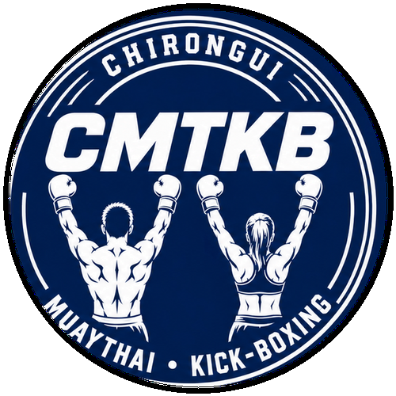

👶
Baby Boxing
4 à 6 ans
Découverte ludique et apprentissage des premières bases.

CHIRONGUI • MAYOTTE
Un club ouvert à tous, du Baby Boxing à la compétition, avec l'ambition de faire rayonner les talents mahorais sur la scène nationale et internationale.
LE CMTKB
Le CMTKB – Chirongui Muaythai Kick-Boxing est un club ouvert à tous, implanté dans le sud de Mayotte, avec pour ambition de promouvoir et développer les sports de contact sur le territoire.
Au-delà de la pratique sportive, le club souhaite offrir aux jeunes un cadre structurant, fondé sur la discipline, le respect, le dépassement de soi et la confiance en soi, tout en leur permettant de s'épanouir à travers la pratique sportive.
Le CMTKB accorde une place importante à la compétition et à la performance, avec l'ambition d'accompagner les sportifs vers le plus haut niveau, de faire émerger les talents mahorais et de contribuer à leur reconnaissance sur la scène nationale et internationale.
NOS DISCIPLINES
4 à 6 ans
Découverte ludique et apprentissage des premières bases.
7 à 14 ans
Loisir ou compétition en Kick Light et K1 Light uniquement.
15 ans et +
Loisir ou compétition en Kick Light, K1 Light, Low Kick et K1 Style.
Un parcours pour les pratiquants qui souhaitent progresser, se mesurer en compétition et viser le haut niveau.
SAISON 2026–2027
INSCRIPTIONS
Participez à une séance d'essai gratuite.
Fiche d'inscription, certificat médical, photo d'identité et autorisation parentale pour les mineurs.
La cotisation saisonnière est de 100 €, licence comprise.
Le CMTKB s'occupe directement de la demande de licence auprès de la fédération.
ÉQUIPEMENT & RÈGLES
Du matériel est disponible pour les entraînements. Pour des raisons d'hygiène, il est préférable que chaque pratiquant possède ses propres gants et protège-tibias.
À avoir personnellement : protège-dents, coquille, bandes de boxe et tenue de sport adaptée (short sans poche de préférence).
Ponctualité — arriver à l'heure.
Hygiène & sécurité — ongles courts et bijoux retirés avant l'entraînement.
Respect & politesse — envers les coachs, partenaires et membres du club.
PALMARÈS
2025
🥇 3 médailles d'or
🥉 3 médailles de bronze
2026
🥇 3 médailles d'or
🥈 1 médaille d'argent
🥉 4 médailles de bronze
🏆 Vainqueur — 2025
🏆 Vainqueur — 2026
🥇 Médaille d'or — WKO World, Angleterre
🥉 Médaille de bronze — ISKA World, Australie
L'ÉQUIPE
Président & coach
DE • BMF2 • BMF3
Coach
BMF2
CONTACT
📍 Lycée Général Tani Malandi, 97620 Chirongui